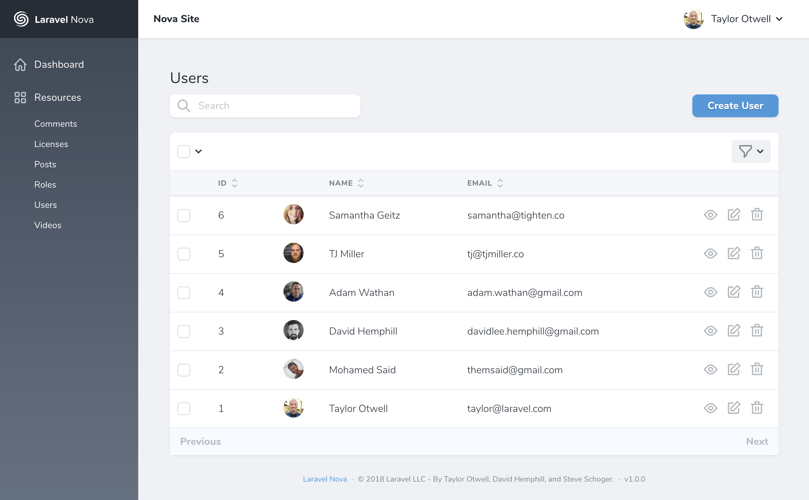
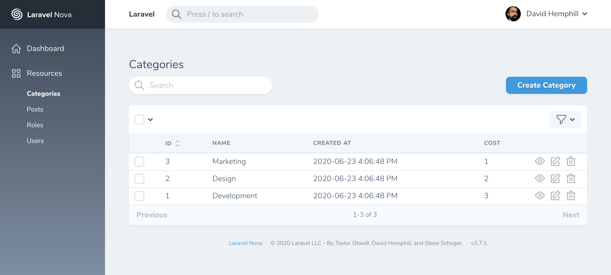
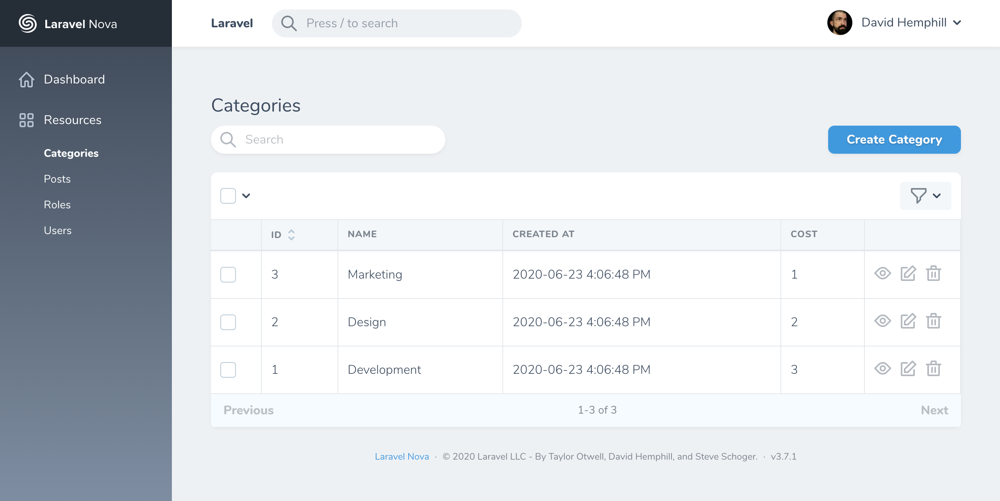
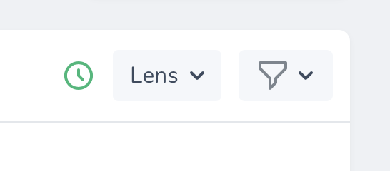
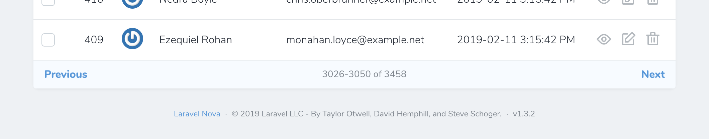
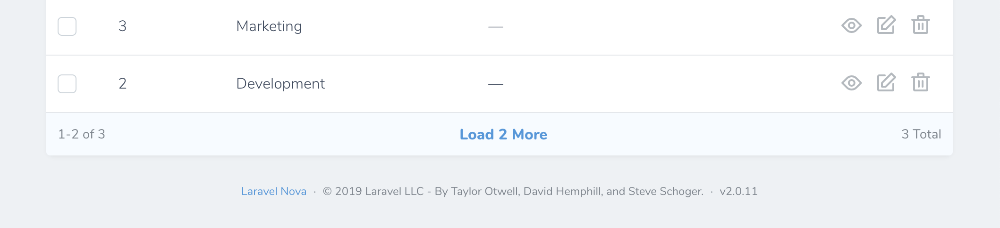
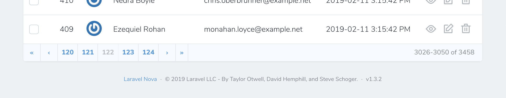

The Basics
Introduction
Laravel Nova is a beautiful administration dashboard for Laravel applications. Of course, the primary feature of Nova is the ability to administer your underlying database records using Eloquent. Nova accomplishes this by allowing you to define a Nova "resource" that corresponds to each Eloquent model in your application.
Defining Resources
By default, Nova resources are stored in the app/Nova directory of your application. You may generate a new resource using the nova:resource Artisan command:
php artisan nova:resource Post
The most basic and fundamental property of a resource is its model property. This property tells Nova which Eloquent model the resource corresponds to:
/**
* The model the resource corresponds to.
*
* @var string
*/
public static $model = 'App\Models\Post';
Freshly created Nova resources only contain an ID field definition. Don't worry, we'll add more fields to our resource soon.
Reserved Resource Names
Nova contains a few reserved words, which may not be used for resource names.
- Card
- Dashboard
- Field
- Metric
- Resource
- Search
- Script
- Style
- Tool
Registering Resources
Automatic Registration
By default, all resources within the app/Nova directory will automatically be registered with Nova. You are not required to manually register them.
Before resources are available within your Nova dashboard, they must first be registered with Nova. Resources are typically registered in your app/Providers/NovaServiceProvider.php file. This file contains various configuration and bootstrapping code related to your Nova installation.
As mentioned above, you are not required to manually register your resources; however, if you choose to do so, you may do so by overriding the resources method of your NovaServiceProvider.
There are two approaches to manually registering resources. You may use the resourcesIn method to instruct Nova to register all Nova resources within a given directory. Alternatively, you may use the resources method to manually register individual resources:
use App\Nova\User;
use App\Nova\Post;
/**
* Register the application's Nova resources.
*
* @return void
*/
protected function resources()
{
Nova::resourcesIn(app_path('Nova'));
Nova::resources([
User::class,
Post::class,
]);
}
Once your resources are registered with Nova, they will be available in the Nova sidebar:

If you do not want a resource to appear in the sidebar, you may override the displayInNavigation property of your resource class:
/**
* Indicates if the resource should be displayed in the sidebar.
*
* @var bool
*/
public static $displayInNavigation = false;
Grouping Resources
If you would like to separate resources into different sidebar groups, you may override the group property of your resource class:
/**
* The logical group associated with the resource.
*
* @var string
*/
public static $group = 'Admin';
Resource Table Style Customization
Nova supports a few visual customization options for your resources.
Table styles
Sometimes it's convenient to show more data on your resource index tables. To accomplish this, you can use the "tight" table style option designed to increase the visual density of your table rows. Override the static $tableStyle property or the static tableStyle method on your Resource class:
/**
* The visual style used for the table. Available options are 'tight' and 'default'.
*
* @var string
*/
public static $tableStyle = 'tight';
This will display your table rows with less visual height, enabling more data to be shown:

Column Borders
You can show borders on the sides of columns by overriding the static $showColumnBorders property or the static showColumnBorders method on your Resource class:
/**
* Whether to show borders for each column on the X-axis.
*
* @var bool
*/
public static $showColumnBorders = true;
This will display the table with borders on every table item:

Eager Loading
If you routinely need to access a resource's relationships within your fields, resource title, or resource subtitle, it may be a good idea to add the relationship to the with property of your resource. This property instructs Nova to always eager load the listed relationships when retrieving the resource.
For example, if you access a Post resource's user relationship within the Post resource's subtitle method, you should add the user relationship to the Post resource's with property:
/**
* The relationships that should be eager loaded on index queries.
*
* @var array
*/
public static $with = ['user'];
Resource Events
All Nova operations use the typical save, delete, forceDelete, restore Eloquent methods you are familiar with. Therefore, it is easy to listen for model events triggered by Nova and react to them. The easiest approach is to simply attach a model observer to a model:
namespace App\Providers;
use App\Models\User;
use App\Observers\UserObserver;
use Illuminate\Support\ServiceProvider;
class AppServiceProvider extends ServiceProvider
{
/**
* Bootstrap any application services.
*
* @return void
*/
public function boot()
{
User::observe(UserObserver::class);
}
/**
* Register the service provider.
*
* @return void
*/
public function register()
{
//
}
}
If you would like to attach an observer whose methods are invoked only during Nova related HTTP requests, you may register observers using the Laravel\Nova\Observable class in your application's NovaServiceProvider:
use App\User;
use Laravel\Nova\Observable;
use App\Observers\UserObserver;
/**
* Bootstrap any application services.
*
* @return void
*/
public function boot()
{
parent::boot();
Observable::make(User::class, UserObserver::class);
}
Alternatively, you can determine if the current HTTP request is serving a Nova related request within the Observer itself:
namespace App\Observers;
use App\User;
use Laravel\Nova\Http\Requests\NovaRequest;
use Laravel\Nova\Nova;
class UserObserver
{
/**
* Handle the User "created" event.
*
* @param \App\Models\User $user
* @return void
*/
public function created(User $user)
{
Nova::whenServing(function (NovaRequest $request) use ($user) {
// Only invoked during Nova requests...
});
// Always invoked...
}
}
Preventing Conflicts
If the model has been updated since its last retrieval, Nova will automatically respond with a 409 Conflict status code and display an error message to prevent unintentional model changes. This may occur if another user updates the model after you have opened the "Edit" page on the resource. This feature is also known as "Traffic Cop".
Disabling Traffic Cop
If you are not concerned with preventing conflicts, you can disable the Traffic Cop feature:
/**
* Indicates whether Nova should check for modifications between viewing and updating a resource.
*
* @var bool
*/
public static $trafficCop = false;
You may also override the trafficCop method on the resource if you require more intense customization when determining if this feature should be enabled:
/**
* Indicates whether Nova should check for modifications between viewing and updating a resource.
*
* @param \Illuminate\Http\Request $request
* @return bool
*/
public static function trafficCop(Request $request)
{
return static::$trafficCop;
}
Time Synchronization
If you are experiencing issues with traffic cop you may first want to check that the system time is correctly synchronized using NTP.
Resource Polling
Nova can automatically fetch the latest records for a resource at a specified interval. To enable polling, override the polling property of your Resource class:
/**
* Indicates whether the resource should automatically poll for new resources.
*
* @var bool
*/
public static $polling = true;
To customize the polling interval, you may override the pollingInterval property on your resource class with the number of seconds Nova should wait before fetching new resource records:
/**
* The interval at which Nova should poll for new resources.
*
* @var int
*/
public static $pollingInterval = 5;
Toggling Resource Polling
By default, when resource polling is enabled, there is no way to disable it once the page loads. You can instruct Nova to display a start/stop toggle button for resource polling by setting the showPollingToggle property on your resource class:
/**
* Indicates whether to show the polling toggle button inside Nova.
*
* @var bool
*/
public static $showPollingToggle = true;
Nova will then display a clickable button inside the interface:

Preventing Accidental Resource Form Abandonment
When creating and editing resource forms with many fields, you may wish to prevent the user from accidentally leaving the form due to a misclick. You can enable this for each of your resources by setting the static preventFormAbandonment property to true:
/**
* Indicates whether Nova should prevent the user from leaving an unsaved form, losing their data.
*
* @var bool
*/
public static $preventFormAbandonment = true;
Redirection
Nova allows you to easily customize where a user is redirected after performing resource actions such as creating or updating a resource:
Redirection Limitation
Behind the scene, Nova's redirect features use the Vue router's push() method. Because of this, redirection is limited to paths within Laravel Nova.
After Creating Redirection
You may customize where a user is redirected after creating a resource using by overriding your resource's redirectAfterCreate method:
/**
* Return the location to redirect the user after creation.
*
* @param \Laravel\Nova\Http\Requests\NovaRequest $request
* @param \Laravel\Nova\Resource $resource
* @return string
*/
public static function redirectAfterCreate(NovaRequest $request, $resource)
{
return '/resources/'.static::uriKey().'/'.$resource->getKey();
}
After Updating Redirection
You may customize where a user is redirected after updating a resource using by overriding your resource's redirectAfterUpdate method:
/**
* Return the location to redirect the user after update.
*
* @param \Laravel\Nova\Http\Requests\NovaRequest $request
* @param \Laravel\Nova\Resource $resource
* @return string
*/
public static function redirectAfterUpdate(NovaRequest $request, $resource)
{
return '/resources/'.static::uriKey().'/'.$resource->getKey();
}
After Deletion Redirection
You may customize where a user is redirected after deleting a resource using by overriding your resource's redirectAfterDelete method:
/**
* Return the location to redirect the user after deletion.
*
* @param \Laravel\Nova\Http\Requests\NovaRequest $request
* @return string|null
*/
public static function redirectAfterDelete(NovaRequest $request)
{
return null;
}
Keyboard Shortcuts
You may press the C key on a resource index to navigate to the "Create Resource" page. On the resource detail page, the E key may be used to navigate to the "Update Resource" page.
Pagination
Nova has the ability to show pagination links for your Resource listings. You can choose between three different styles: "simple", "load-more", and "links", depending on your application's needs:



By default, Nova Resources are displayed using the "simple" style. However, you may customize this to use either the "load-more" or "links" style. You can enable this by setting the pagination option in your nova configuration file:
'pagination' => 'links',
Customizing Pagination
If you'd like to customize the amounts shown on each resource's "per page" filter menu, you can do so by customizing its perPageOptions property:
/**
* The pagination per-page options configured for this resource.
*
* @return array
*/
public static $perPageOptions = [50, 100, 150];
Alternatively, you can override the perPageOptions method on the Resource:
public static function perPageOptions()
{
return [50, 100, 150];
}
Customizing perPageOptions & Resource Fetching
Changing the value of perPageOptions on your Resource will cause Nova to fetch the number of resources equal to the first value in the perPageOptions array.
Resource Index Search Debounce
You may wish to customize the search debounce timing of an individual resource's index listing. For example, the queries executed to retrieve some resources may take longer than others. You can customize an individual resource's search debounce by setting the debounce property on the resource class:
/**
* The debounce amount to use when searching this resource.
*
* @var float
*/
public static $debounce = 0.5; // 0.5 seconds